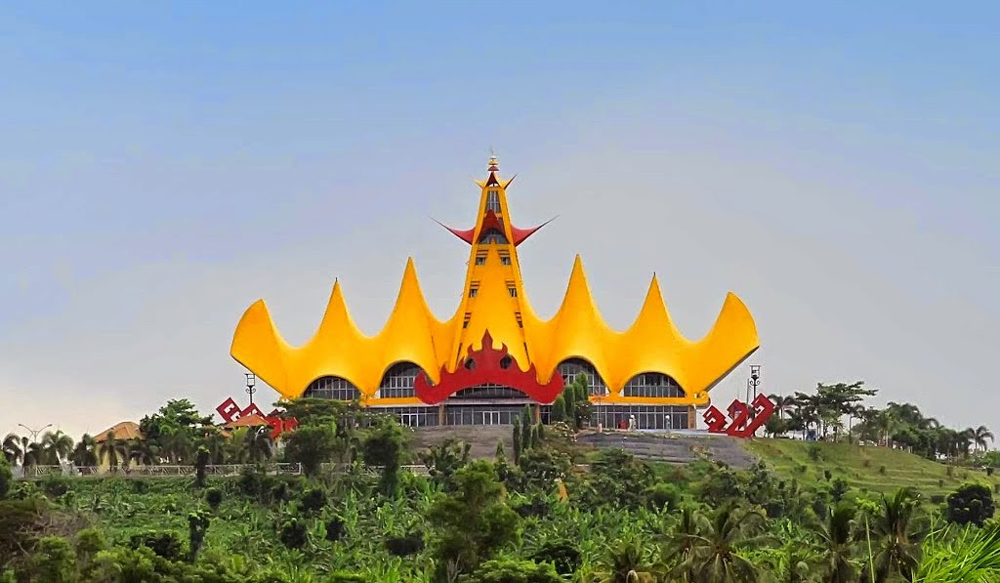
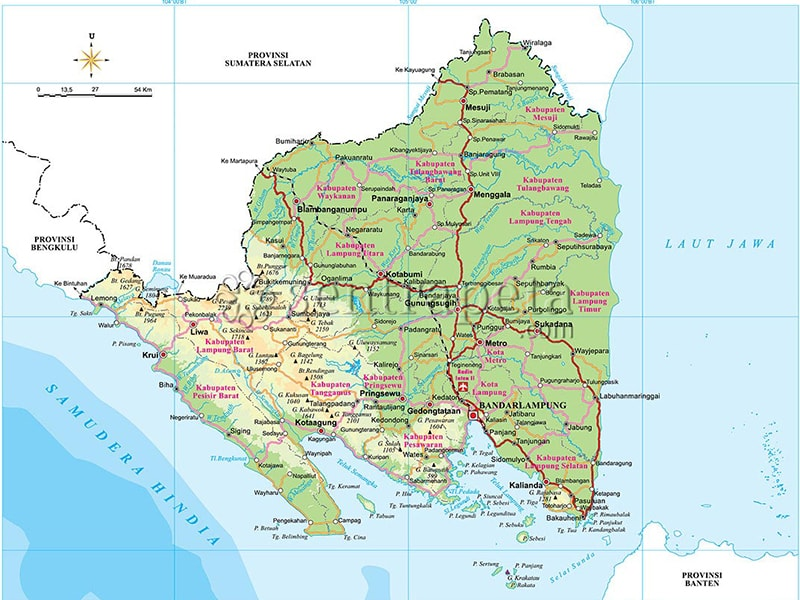
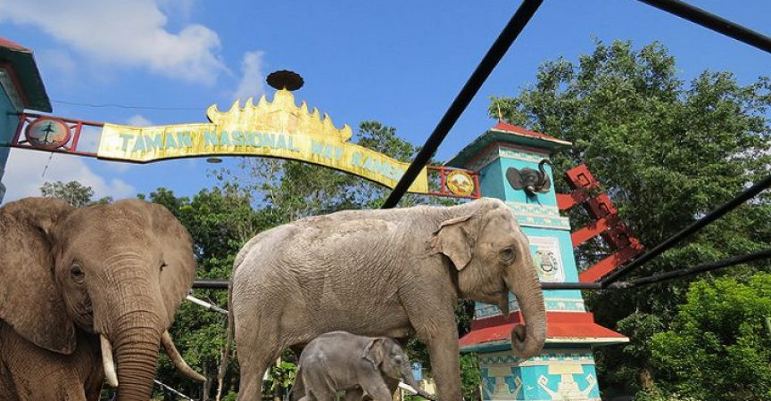
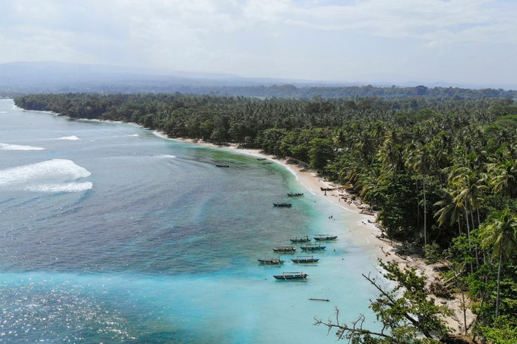
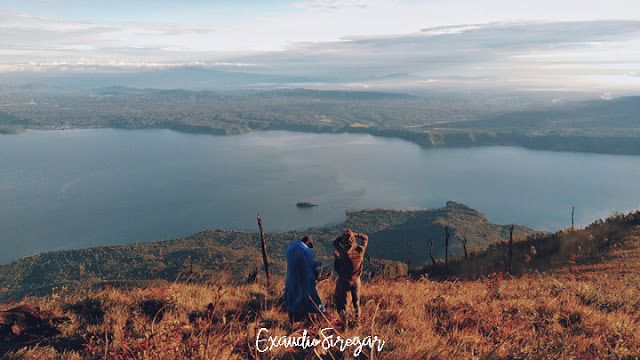

Sejarah

Provinsi Lampung lahir pada tanggal 18 Maret 1964 dengan ditetapkannya Peraturan Pemerintah Nomor 31964 yang kemudian
menjadi Undang-undang Nomor 14 tahun 1964. Sebelum itu Provinsi Lampung
merupakan Karesidenan yang tergabung dengan Provinsi Sumatera Selatan.
Kendatipun Provinsi Lampung sebelum tanggal 18 maret 1964 tersebut secara administratif
masih merupakan bagian dari Provinsi Sumatera Selatan, namun daerah ini jauh sebelum
Indonesia merdeka memang telah menunjukkan potensi yang sangat besar serta corak warna
kebudayaan tersendiri yang dapat menambah khasanah adat budaya di Nusantara yang tercinta ini.
Oleh karena itu pada zaman VOC daerah Lampung tidak terlepas dari incaran penjajahan Belanda.
Geografis

Provinsi Lampung memiliki luas 35.376,50 km² dan terletak di antara 105°45'-103°48' BT dan 3°45'-6°45' LS.
Daerah ini berada di sebelah barat berbatasan dengan Samudra Hindia, di sebelah timur dengan Laut Jawa,
di sebelah utara berbatasan dengan provinsi Sumatra Selatan, dan di sebelah selatan berbatasan dengan Selat Sunda.
Beberapa pulau termasuk dalam wilayah Provinsi Lampung, yang sebagian besar terletak di Teluk Lampung,
di antaranya: Pulau Darot, Pulau Legundi, Pulau Tegal, Pulau Sebuku, Pulau Kelagian, Pulau Sebesi,
Pulau Pahawang, Pulau Krakatau, Pulau Putus dan Pulau Tabuan. Ada juga Pulau Tampang dan Pulau Pisang di
yang masuk ke wilayah Kabupaten Pesisir Barat
Wisata
Lampung memiliki tempat wisata dan wisata kuliner yang menjanjikan, Baik tempat wisata di Lampung Tengah,
Lampung Timur dan wilayah lain ternyata memiliki keindahan dan tempat yang asik untuk disinggahi.
Bagi anda yang datang ke tempat ini sangat sayang jika tidak mengunjungi tempat wisata di Lampung.
Way Kambas

Taman Nasional Way Kambas adalah taman nasional perlindungan gajah yang terletak di daerah Lampung tepatnya
di Kecamatan Labuhan Ratu, Lampung Timur, Indonesia. Selain di Way Kambas, sekolah gajah juga bisa ditemui
di Minas, Riau. Gajah Sumatra yang hidup di kawasan ini semakin berkurang jumlahnya.
Taman Nasional Way Kambas berdiri pada tahun 1985 merupakan sekolah gajah pertama di Indonesia
Krui

Potensi pantai di Krui terbilang menakjubkan. Pantai di Krui, terkenal sebagai
salah satu spot surfing yang mendunia. Salah satu event dunia yang digelar di Krui pada 2019
adalah Krui World Surfing League (WSL) 2019
Gunung Seminung

Tidak hanya menjadi kawasan wisata dengan destinasi puluhan air terjun dan sejumlah danau, Kabupaten Lampung Barat,
Provinsi Lampung, yang dikenal dengan surganya pariwisata ternyata memiliki wisata kekinian.